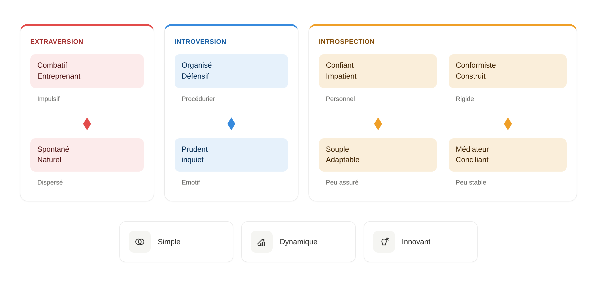
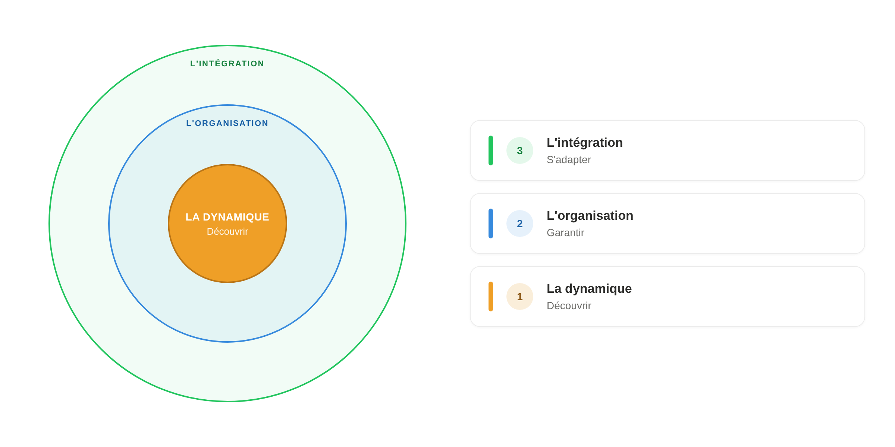
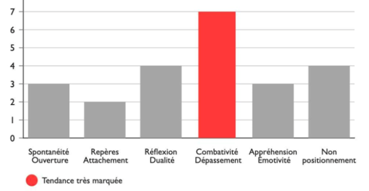
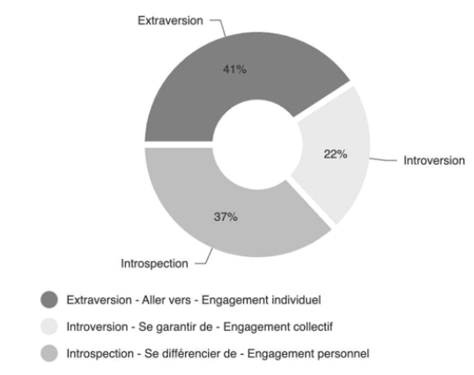

La méthodologie.
Pour aller au-delà d'une image préconstruite d'une personnalité.
Major Exchanges réduit la subjectivité d'une étude de la personnalité et des motivations.
Il structure l'information par l'utilisation d'une méthodologie et un guide d'entretien, et en garantissant l'avis de l'expert RH.
Résultat : des études plus fines, plus comparables d'un candidat à l'autre, directement actionnables pour le recrutement, la mobilité ou le coaching.

Tableau de personnalité — lecture multi-niveaux d'une étude
Avancer · Garantir · Se différencier.
Trois prédispositions centrales qui entraînent, sécurisent ou différencient l'action.
Trois engagements interactifs complémentaires qui conditionnent la qualité d'une implication : investissement, relation, caractère,, management, commerce, sécurisation

Trois dynamiques individuelles, trois engagements interactifs complémentaires.
Huit dimensions
cartographiées.
Implication, relation, caractère, réflexion, organisation, commerce, management, émotions. Les huit dimensions de la rosace sont évaluées indépendamment puis recoupées pour produire une lecture multi-niveaux de la personnalité.
Chaque dimension se décline ensuite en six critères opérationnels, soit 48 critères au total — la matrice utilisée pour valider l'adéquation entre une personne et les requis d'un poste ou d'une mission.
Cinq niveaux,
un moteur central.
Major Exchanges étudie les interactions entre une personne et son environnement professionnel. Cinq niveaux distincts sont analysés et articulés autour d'un moteur central : l'impulsion — une approche structurée rare sur le marché de l'évaluation comportementale RH.
Intégration
L'ancrage de la personne dans son environnement professionnel et collectif. La capacité à s'inscrire dans un cadre, des règles, des relations.
Motivation
Les leviers profonds qui soutiennent l'engagement. Les sources d'énergie personnelle qui orientent l'action dans la durée.
Organisation
La structuration de l'action — méthode, priorités, gestion du temps. La capacité à articuler les moyens et les fins.
Prédisposition
Les dispositions naturelles, les inclinations. Les zones où la personne déploie spontanément ses capacités.
Impulsion
Le moteur central. La force qui met en mouvement les quatre autres niveaux et donne sa cohérence à l'ensemble.
1 moteur central
Une lecture visuelle de la personnalité.
Chaque étude est restituée sous une forme graphique synthétique — histogrammes de tendances, répartition des modes d'engagement, et rosace des dimensions. L'objectif : faciliter la lecture aux managers comme aux bénéficiaires.


Histogramme de tendances · répartition des modes d'engagement
Comprendre · Structurer · Dynamiser.
La formation Major Exchanges articule trois temps distincts, pour aller au-delà de toute représentation mentale, physique ou sociale.
Comprendre
Empreinte émotionnelle. Profiling sur 10 000 profils. Étude par recoupement. Validation matricielle des requis.
4 modulesStructurer
Définition des requis. La communication comme moyen. Les jeux d'influence. L'intégration du collaborateur.
4 modulesDynamiser
Construction d'équipe. Complémentarité et synergie. Acceptation des différences. Optimisation par valorisation.
4 modules